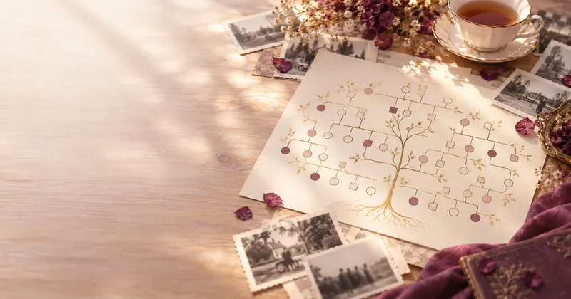
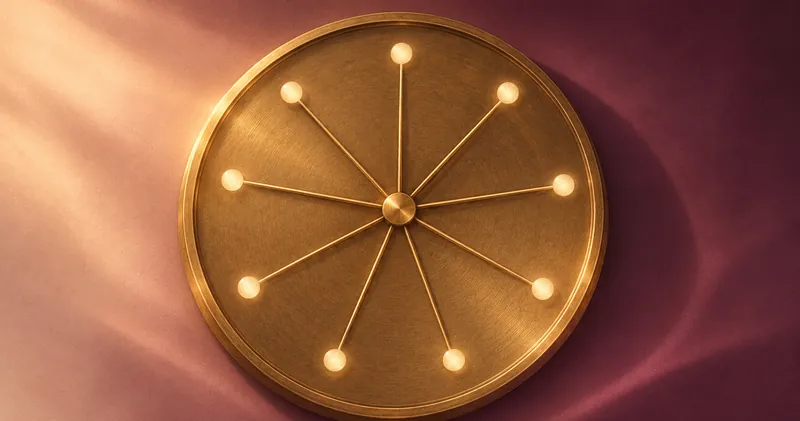
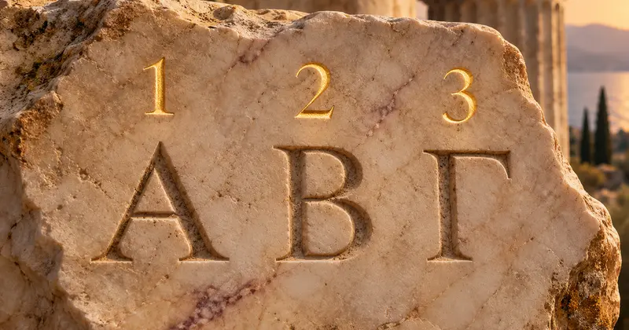
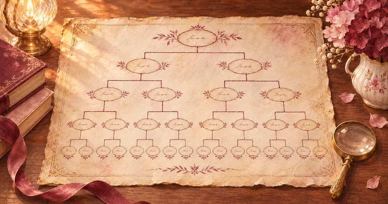

Le blog
Des articles sourcés pour comprendre ta famille et toi-même : psychogénéalogie, schémas répétitifs, blessures de l'âme, émotions, symbolique des rêves, numérologie. Chaque article remonte à l'origine des idées et distingue ce qui est démontré de ce qui relève du symbole.
Des articles courts et sourcés : commence par celui qui te parle, ou par le ciel du mois.
La roue des thèmes
Touche un secteur pour entrer dans le thème.
Relations, couple et emprise
Pervers narcissique, dépendance affective, étapes du couple, relations floues : ce qui se joue entre deux personnes, et ce que ta famille y a mis.
Pervers narcissique : pourquoi on reste, et ce que ça répète
Le cycle, l’emprise, et ce que cette relation peut rejouer dans ta lignée. Repères, sans diagnostic.
RelationsParent pervers narcissique : repérer le schéma
Les signes chez un père ou une mère, et pourquoi un enfant ne les voit pas.
RelationsAdulte, enfant d’un parent pervers narcissique
Ce qu’on porte, pourquoi on le retrouve en amour, et comment reprendre sa place.
Schémas répétitifsSchémas répétitifs en amour : repérer ce qui se rejoue
Toujours le même type de personne, la même fin ? Ce que ton histoire familiale peut éclairer, et un exercice pour faire autrement.
CouplePlusieurs unions à chaque génération
Ce qu'en disent McGoldrick et Irène Théry sur les remariages et les familles recomposées.
CoupleL’imago : pourquoi je choisis toujours le même type de partenaire
L’exercice des deux cercles, les rôles qu’on rejoue en amour et les pistes de ta lignée.
CoupleLes étapes du couple : crise des 3 ans, des 7 ans et après
Fusion, individuation, adaptation, redécouverte : ce qui se joue à chaque étape, et les modèles de couple hérités.
CoupleDépendance affective : la reconnaître et s’en libérer
Les signes, les racines familiales et des pistes concrètes pour aimer par choix plutôt que par peur.
PsychogénéalogieÉpouser quelqu'un qui porte le prénom de son père ou de sa mère : hasard ou écho ?
Ton conjoint porte le prénom de ton père, de ta mère ou d'un frère disparu ? Choix amoureux selon Freud et la thérapie Imago, lecture…
Ta vie en réelRelation floue : pourquoi c'est si dur de demander « on est quoi ? »
Reconnaître une relation floue, comprendre pourquoi on accepte le flou, et oser poser la question, avec des phrases prêtes à dire.
PsychogénéalogieRelation mère fille toxique : ce qui se transmet
Les signes, ce que ta lignée féminine rejoue, et comment retrouver ta place sans couper le lien.
Ta vie en réelToujours en conflit avec tes parents ? Ce qui se joue vraiment
Pourquoi ça clashe à 20 ans, ce que leurs inquiétudes racontent, et une méthode en cinq étapes pour sortir des disputes.
Ta vie en réelSe sentir seule, même entourée
Ce n'est ni rare ni un défaut. Ce qui peut se jouer, et cinq petites actions pour recréer du lien.
Les blessures de l’âme
Rejet, abandon, humiliation, trahison, injustice : chaque blessure, son masque, et son écho en amour.
Blessure de rejet ou d'abandon : comment faire la différence
La différence en un tableau et un exemple concret, avec le comparatif des cinq blessures.
BlessuresLes cinq masques des blessures de l'âme
Fuyant, dépendant, masochiste, contrôlant, rigide : ce que chaque masque protège, et comment l'alléger.
BlessuresBlessure d'humiliation et relation amoureuse : la reconnaître en amour
Honte, effacement, besoin de faire plaisir : les signes, le masque en amour, et ce que ta famille t'a appris à cacher.
BlessuresLa blessure de rejet : la reconnaître, comprendre d'où elle vient
Blessure de rejet : ses signes, le masque du fuyant, le parent souvent concerné, ce qu'elle rejoue en amour et au travail, et son histoire familiale.
BlessuresLa blessure d'abandon : la reconnaître, comprendre d'où elle vient
Blessure d'abandon : ses signes, le masque du dépendant, le parent souvent concerné, ce qu'elle rejoue en amour et au travail, et son histoire…
BlessuresLa blessure de trahison : la reconnaître, comprendre d'où elle vient
Blessure de trahison : ses signes, le masque du contrôlant, le parent souvent concerné, ce qu'elle rejoue en amour et au travail, et son histoire…
BlessuresLa blessure d'humiliation : la reconnaître, comprendre d'où elle vient
Blessure d'humiliation : ses signes, quel parent est souvent concerné, le masque du masochiste, ce qu'elle rejoue en amour et au travail, et dans…
BlessuresLa blessure d'injustice : la reconnaître, comprendre d'où elle vient
Blessure d'injustice : ses signes, le masque du rigide, la colère, ce qu'elle rejoue au travail et en amour, le parent souvent concerné et la famille.
BlessuresBlessure d'abandon et relation amoureuse
Quand la peur d'être quitté·e prend la place : les signes, l'histoire familiale et des pistes.
BlessuresBlessure de trahison et relation amoureuse
Méfiance, contrôle, jalousie : retrouver confiance, et voir d'où vient la peur d'être trompé·e.
Comprendre la psychogénéalogie
Les notions de base, d’où elles viennent, et comment les repérer dans ton arbre.
Génogramme vs génosociogramme : la différence
Définition, symboles, origine en travail social, et ce qui distingue les deux outils.
PsychogénéalogieConstellation familiale : définition et faire seul·e
Ce que c'est vraiment, comment ça se passe en groupe, et ce qu'on peut explorer de son côté.
PsychogénéalogieLa mémoire transgénérationnelle
Ce qui se transmet en silence d'une génération à l'autre, et ce qu'on peut vraiment en dire.
PsychogénéalogieLes loyautés familiales invisibles
Ces fidélités qui nous lient sans le savoir, et comment les transformer en fidélités choisies.
PsychogénéalogieLe syndrome du gisant
Porter, sans le savoir, la vie d'un mort : la notion du Dr Sellam, un exemple sur cinq générations et ses limites.
GénosociogrammeQuelles informations rassembler avant de faire son génosociogramme
Les informations à réunir, thème par thème, où les trouver, et une liste à cocher à imprimer.
FamilleLes questions à poser à sa famille pour compléter son arbre
Comment s'y prendre avec tes parents et grands-parents, une trentaine de questions, et quoi faire des réponses.
Arbre de vieArbre de vie, arbre généalogique, génosociogramme : trois arbres à ne pas confondre
À quoi sert chacun, ce qu'on y note, d'où il vient, et comment les utiliser ensemble.
Ce qui se répèteSecrets de famille : non-dits, fantômes et zones d'ombre
Tisseron, Abraham et Torok, les indices dans l'arbre, les archives : chercher un secret de famille sans accuser.
Ce qui se répèteLa guerre dans l'arbre : mémoire familiale et silences
1914, 1940, l'Algérie : ce que les guerres laissent dans la mémoire des familles, et comment retrouver leur trace.
Ce qui se répèteArgent et histoire familiale : quand les revers se répètent
Faillites sur plusieurs générations, héritages qui divisent, transfuges de classe : ce que l'argent transmet.
PsychogénéalogieLa peur de manquer d'argent
Quand l'insécurité vient de plus loin que toi, et des pistes concrètes pour l'apaiser.
Ce qui se répèteTransfuge de classe : réussir plus que ses parents
La névrose de classe selon Vincent de Gaulejac, les transclasses de Chantal Jaquet, et comment se libérer de la culpabilité.
Ce qui se répèteL'implexe : quand le même ancêtre apparaît dans deux branches
Mariages entre cousins, ancêtres communs, dispenses de l'Église, règles d'alliance dans le monde : ce que l'implexe raconte d'une famille.
Ce qui se répèteLe métier transmis de génération en génération
Reprendre le métier de son père, rompre avec lui, voir un métier sauter une génération : héritage, loyauté et liberté.
PsychogénéalogieConflit de loyauté chez l'enfant : le triangle familial et la loyauté clivée
Conflit de loyauté : définition, triangle familial (Bowen, Minuchin), loyauté clivée, enfant messager ou confident, et comment sortir de ce rôle.
PsychogénéalogieFamille toxique : pourquoi on coupe les ponts
Famille toxique et coupure émotionnelle : ce que Bowen a observé, pourquoi la distance se répète d’une génération à l’autre, et comment en sortir.
PsychogénéalogieParentification : quand l'enfant porte ses parents
Parentification : définition, exemples et signes à l'âge adulte. Un enfant parentifié prend en charge, trop tôt, les besoins matériels ou…
PsychogénéalogieAdoption et placement dans l'arbre : la blessure primitive et ce qui se transmet
Adoption, placement en famille d'accueil, enfant confié à des proches : la blessure primitive selon Nancy Verrier, ce que la psychogénéalogie…
PsychogénéalogieLe syndrome d'anniversaire : faits, hypothèses et coïncidences
Syndrome d'anniversaire en psychogénéalogie : définition, origine, exemple et limites. Comment distinguer une répétition d'une simple coïncidence.

PsychogénéalogieLa place dans la fratrie
Aîné·e, milieu, cadet·te : ce que disent les recherches, et ce qu'apporte la psychogénéalogie.
PsychogénéalogieConflit familial à Noël : pourquoi les disputes reviennent
Le syndrome de Noël, les rôles que chacun·e reprend à table, ce qui se rejoue d'une génération à l'autre, et des repères pour fêter autrement.
Fratrie, deuil et naissances
La place dans la fratrie, les deuils de la lignée, les enfants qui ne sont pas nés ou qui remplacent.
Même place qu'un ancêtre dans la fratrie
Ce que dit Walter Toman sur la place dans la fratrie, et comment repérer ces échos dans ton arbre.
Ce qui se répèteFille ou garçon attendu : ce que racontent les fratries
Que des filles, le garçon tant attendu, le même nombre d'enfants d'une génération à l'autre : lire les fratries de ton arbre.
PsychogénéalogieL'enfant de remplacement
Naître après un enfant disparu : exemples, vécu à l'âge adulte et pistes pour trouver sa place.
PsychogénéalogieLe jumeau perdu
Jumeau évanescent, manque sans nom, transmission dans la lignée : ce que l'on sait, et quatre étapes pour lui rendre sa place.
Ce qui se répèteLe deuil non fait : quand une mort jeune traverse les générations
Morts jeunes, premier enfant perdu, mère partie tôt : ce que deviennent les deuils qui n'ont pas pu se faire, et les rites du monde.
Ce qui se répèteLe projet sens : être conçu·e pendant un deuil
Ce que la famille vivait pendant ton attente : la notion de Marc Fréchet, la période de conception, et ses limites.
Ce qui se répèteLa répétition des âges dans la famille
Devenir parent au même âge, vivre un même événement au même âge : réactions d'anniversaire et rites de passage du monde entier.
Ce qui se répèteVeuves de génération en génération
Le veuvage précoce qui se répète dans les familles, et ce qu'il transmet.
PsychogénéalogieFausse couche, IVG, enfant mort-né : la place des enfants non nés dans la fratrie
Deuil périnatal, fausse couche, IVG, enfant mort-né : faut-il les compter dans sa fratrie ? Ce qu'en disent Schützenberger, Dumas, Bayle et Porot,…
PsychogénéalogieAîné·e après une fausse couche : quand on est l'aîné de fait, mais pas le premier
Tu es l'aîné·e de ta fratrie, mais ta mère avait perdu une grossesse avant toi ? Rang de naissance et place de fait, lecture symbolique,…
PsychogénéalogiePerdre une grossesse au même âge que sa mère : un syndrome d'anniversaire ?
Une fausse couche au même âge que sa mère ou sa grand-mère : syndrome d'anniversaire, transparence psychique de la grossesse, ce que dit la…
Deuil et lignéePremier Noël sans toi : traverser les fêtes après un deuil
Noël, anniversaire, fête des mères : traverser les premières fêtes, et le rituel de la bougie pour accompagner l'être cher vers la lumière.
Ancêtres, Toussaint et autels
Honorer tes ancêtres, créer un autel, regarder les deuils de ta lignée.
Comment créer un autel des ancêtres
D'où vient la pratique, où le placer, que mettre dessus, la libation, quoi dire, et ce que la psychogénéalogie en retient.
Autel des ancêtresQue mettre sur un autel des ancêtres
La liste objet par objet : le nom écrit, la lumière, l'eau, le pain, l'objet qui vient d'eux. D'où vient chaque geste, et ce qu'on évite.
Autel de saisonCréer son autel de saison : les quatre éléments, le matériel et le sens
D'où vient cette tradition très ancienne, les quatre éléments qui structurent un autel, ce qu'il te faut vraiment et comment t'en servir au quotidien.
ToussaintToussaint : honorer tes ancêtres et regarder les deuils de ta lignée
D'où viennent ces fêtes, les deuils restés en suspens, des questions à poser en famille et des gestes simples.
Émotions et vision de vie
Nommer ce que tu ressens, choisir ce que tu construis.
Émotion ou sentiment : quelle différence, et pourquoi ça change tout
La vague et le climat : reconnaître l’émotion et le sentiment, les émotions permises dans ta famille, et la lettre à ta colère.
ÉmotionsÉmotions et hormones : ce que ton corps fait quand tu ressens
Cortisol, ocytocine, dopamine, sérotonine, endorphines expliqués simplement, et ce que l’épigénétique dit, avec prudence.
ÉmotionsLes 5 éléments et les émotions
Colère et Bois, joie et Feu, souci et Terre, tristesse et Métal, peur et Eau : une lecture symbolique au fil des saisons.
VisionTableau de vision : comment créer ton vision board
Les 6 étapes, des idées par domaine de vie, et un outil gratuit pour en faire ton fond d’écran.
VisionListe des valeurs personnelles : 100 valeurs pour trouver les tiennes
Choisir tes 5 valeurs, les noter sur 10, voir celles qui viennent de ta famille. Avec un PDF à imprimer.
Symbolique des rêves
De Jung aux civilisations anciennes et aux peuples autochtones : une série en treize articles pour comprendre la langue des rêves et ce qu’elle dit de ton histoire familiale.
La symbolique des rêves, une langue que l'humanité parle depuis toujours
Pourquoi l'humanité a toujours prêté un sens aux rêves, les grandes façons de les lire et une première méthode pour t'en approcher.
Symbolique des rêvesJung et les rêves : inconscient collectif, archétypes, ombre et ancêtres
La rupture avec Freud, les archétypes, la fonction compensatrice du rêve et le pont que Jung a tendu vers les ancêtres.
Symbolique des rêvesRêver des morts et des ancêtres : ce que ces rêves disent de ta famille
Proches disparus et ancêtres dans les rêves : croyances du monde entier, lecture de Jung, rêves de deuil et pistes concrètes pour l'histoire familiale.
Symbolique des rêvesLes rêves dans l'Antiquité : Mésopotamie, Égypte, Grèce et Rome
Mésopotamie, Égypte, Bible, Grèce et Rome : comment l'Antiquité lisait les rêves, et pourquoi le contexte du rêveur, cher à Artémidore, compte encore.
Symbolique des rêvesCe que les peuples autochtones nous apprennent sur les rêves
Désirs de l'âme chez les Wendat, rêves partagés à l'aube chez les Achuar, Tjukurpa des Anangu : des traditions vivantes, présentées avec précision et sans exotisme.
Symbolique des rêvesEau, maison, serpent, chute… les grands symboles des rêves dans les cultures
Dix grands symboles des rêves, de la maison familiale au serpent, lus à travers Jung, les mythes et les traditions, avec une question à te poser pour chacun.
Symbolique des rêvesRêves récurrents et mémoire familiale : quand la nuit insiste
Ce que Jung disait des rêves qui reviennent, comment ils changent quand tu changes, et comment les relier prudemment à ton arbre familial.
Symbolique des rêvesTenir un journal de rêves : la méthode pas à pas, du carnet à la lignée
La méthode pas à pas pour noter, titrer, amplifier et relire tes rêves, avec un modèle de page et des pistes pour les relier à ta lignée.
Symbolique des rêvesRêver de son ex : pourquoi il ou elle revient la nuit
Ex qui veut revenir, qui t'ignore, qui s'excuse : ce que dit ce rêve, ce qu'il rejoue de ta lignée, et comment libérer le lien.
Symbolique des rêvesRêver d'être enceinte : ce qui veut naître en toi, et dans ta lignée
Projet qui mûrit, part de toi qui renaît, naissances de la lignée : ce que dit ce rêve, ses variantes et l'exercice pour l'écouter.
Symbolique des rêvesRêver de dents qui tombent : ce que ce rêve dit de toi et de ta famille
Perte de contrôle, parole retenue, et la plus ancienne lecture du rêve : les dents représentent les membres de la famille.
Symbolique des rêvesRêver d'être poursuivi·e ou de fuir : ce que tu évites, et ce que ta lignée a fui
Ce que tu fuis, qui te poursuit, ce qu'en disait Jung et les fuites de ta lignée, avec l'exercice pour te retourner.
Symbolique des rêvesNe pas pouvoir courir, crier ou bouger en rêve : les cauchemars d'impuissance
Jambes lourdes, cri bloqué, aide qui ne vient pas : ce que disent ces cauchemars, ce que fait le corps, et ce que porte ta lignée.
ToussaintRêver de ses grands-parents décédés
Qui sourit, qui parle, qui donne quelque chose : ce que ces rêves peuvent te dire.
Numérologie : ton année et tes nombres
Année 2027, année personnelle de 1 à 9, nombres maîtres, chemin de vie.
Année universelle 2027 : ce que le nombre 2 (et le 11) raconte
Le calcul, l'histoire du 11 et ce que l'année 2027 peut t'inviter à regarder, en remontant aux sources.

NumérologieAnnée universelle : calcul, origine et limites de la méthode
D'où vient vraiment le calcul : base dix, Atlantic City, calendriers. Ce que la méthode dit, et ce qu'elle ne dit pas.
NumérologieLe cycle de neuf ans en numérologie : de 2025 à 2034
Les neuf années une à une, le neuf dans les traditions du monde et la magie arithmétique du 9.
NumérologieAnnée personnelle 2027 : calcule la tienne
Ton année en numérologie, de 1 à 9 : ce qu'elle t'invite à vivre en amour, au travail, mois par mois et dans ton histoire familiale.
Tes nombresAnnée personnelle 1 en 2027 : une année de commencement
Année personnelle 1 en 2027 : commencer, oser, choisir pour toi. Ce que l'année t'apporte en amour, au travail, mois par mois et dans ton histoire…
Tes nombresAnnée personnelle 2 en 2027 : une année de patience et de liens
Année personnelle 2 en 2027 : patience, lien, écoute. Ce que l'année t'apporte en amour, au travail, mois par mois et dans ton histoire familiale.
Tes nombresAnnée personnelle 3 en 2027 : une année d'expression
Année personnelle 3 en 2027 : expression, création, rencontres. Ce que l'année t'apporte en amour, au travail, mois par mois et dans ton histoire…
Tes nombresAnnée personnelle 4 en 2027 : une année de construction
Année personnelle 4 en 2027 : construction, stabilité, effort. Ce que l'année t'apporte en amour, au travail, mois par mois et dans ton histoire…
Tes nombresAnnée personnelle 5 en 2027 : une année de changement
Année personnelle 5 en 2027 : changement, liberté, mouvement. Ce que l'année t'apporte en amour, au travail, mois par mois et dans ton histoire…
Tes nombresAnnée personnelle 6 en 2027 : une année de foyer et d'engagements
Année personnelle 6 en 2027 : foyer, engagement, responsabilité. Ce que l'année t'apporte en amour, au travail, mois par mois et dans ton histoire…
Tes nombresAnnée personnelle 7 en 2027 : une année d'introspection
Année personnelle 7 en 2027 : recul, compréhension, intériorité. Ce que l'année t'apporte en amour, au travail, mois par mois et dans ton histoire…
Tes nombresAnnée personnelle 8 en 2027 : une année de réalisation
Année personnelle 8 en 2027 : réalisation, ambition, concret. Ce que l'année t'apporte en amour, au travail, mois par mois et dans ton histoire…
Tes nombresAnnée personnelle 9 en 2027 : une année de fin de cycle
Année personnelle 9 en 2027 : fin de cycle, tri, transmission. Ce que l'année t'apporte en amour, au travail, mois par mois et dans ton histoire…
NumérologieLes nombres maîtres 11, 22 et 33
Définition, calcul, fréquence réelle selon la méthode, et ce que chaque nombre maître dit de toi et de ta lignée.
Tes nombresLe nombre maître 11 : l'inspiration, et ce qu'elle demande
Nombre maître 11 en numérologie : symbolique, chemin de vie 11, forces et défis, le 11 en couple, les métiers qui lui ressemblent et ce qu'il dit…
Tes nombresLe nombre maître 22 : le grand bâtisseur
Nombre maître 22 en numérologie : symbolique, chemin de vie 22, forces et défis, le 22 en couple, les métiers qui lui ressemblent et ce qu'il dit…
Tes nombresLe nombre maître 33 : le don et la transmission
Nombre maître 33 en numérologie : symbolique, chemin de vie 33, forces et défis, le 33 en couple, ses métiers, sa rareté et sa place dans une lignée.
Tes nombresLe même chemin de vie dans la famille
Le même nombre que ta mère ou ta grand-mère ? Calcul exact, nombres maîtres, année personnelle et lecture symbolique.
Tes nombresNombre maître (11, 22, 33) : un héritage familial ?
Quand le 11, le 22 ou le 33 circule dans une lignée : ce que ces nombres portent, et comment les reconnaître chez les tiens.
Aux origines : nombres, calendrier et théories
De Sumer à aujourd’hui : d’où viennent vraiment les nombres, le calendrier, la matrice du destin et la théorie de l’attachement, entre faits et traditions.
Les nombres sacrés de Mésopotamie
Sumer, l'écriture cunéiforme, le système en base 60 : le premier épisode d'une série sur l'origine des nombres.
NumérologieL'Égypte et la Chine antiques
L'Œil d'Horus et ses fractions, les nombres gravés sur les os oraculaires chinois : épisode 2 de la série.

NumérologiePythagore et la Grèce antique
Ce qu'on sait vraiment de lui, la Tétractys, et le mythe construit après sa mort. Épisode 3 de la série.
NumérologieLa gématrie hébraïque
Des premiers rabbins à la Kabbale médiévale : comment les lettres sont devenues des nombres. Épisode 4 de la série.
NumérologieLa naissance de la numérologie moderne
Balliett, Julia Seton Sears, Juno Jordan, et le mythe de la continuité avec Pythagore. Épisode 5, le dernier de la série.
HistoireHistoire du calendrier : d'Hénoch au grégorien
Un calendrier transmis par un ange, des Veilleurs, Sirius, une année de 445 jours et dix jours effacés en 1582.
Tes nombresD'où vient la Matrice de destin ?
La Matrice de destin vient d'une méthode née en 2006. D'où elle vient vraiment, pourquoi on en entend parler seulement maintenant, et son lien…
Tes nombresD'où vient la théorie de l'attachement ?
Des oies de Konrad Lorenz aux guenons de Harlow, de Bowlby à Ainsworth : l'histoire de la théorie de l'attachement, ses 4 styles, et ce qui se…
Prénoms et généalogie
D’où viennent les prénoms, ce qu’ils transmettent, et pourquoi les généalogies s’arrêtent vers 1600.
 Prénoms
Prénoms
La fonction du nom à travers l'histoire
Mésopotamie, Grèce, Rome : pourquoi un prénom n'a jamais été qu'une étiquette. Épisode 1 d'une nouvelle série.
 Prénoms
Prénoms
Les prénoms hébreux théophores
Daniel, Jonathan, Isaïe, Michaël : comment ces prénoms portent le nom d'un dieu, et pourquoi ils ont changé de forme. Épisode 2 de la série.
 Prénoms
Prénoms
Les Maya, les Aztèques et le prénom du jour de naissance
Chez les Maya, les Aztèques et les Akan, le prénom ne se choisit pas : il se lit dans le calendrier. Épisode 3 de la série.
 Prénoms
Prénoms
Les prénoms effacés de l'histoire romaine
Des filles sans vrai prénom individuel, des empereurs au nom rayé des pierres : deux formes d'effacement. Épisode 4 de la série.
 Prénoms
Prénoms
Pourquoi les généalogies s'arrêtent presque toutes vers 1600
1539, 1579, 1563 : les trois textes qui ont créé les registres, et pourquoi le mur d'avant est administratif. Épisode 5, le dernier de la série.
Ce qui se répètePrénoms transmis, prénoms cachés : ce que porte un prénom
Le prénom d'un défunt, un prénom composé, un prénom caché dans un autre : ce que la psychogénéalogie y lit, et les traditions du monde.
Synchronicité et heures miroirs
Un phénomène reconnu en psychologie, pas un signe magique : la synchronicité selon Jung, et les heures miroirs 10h10, 11h11, 20h20 et 22h22.
Ce que Jung en disait vraiment
Le scarabée d'or, la collaboration avec le physicien Pauli, et ce qu'en dit la science aujourd'hui. Épisode 1 d'une nouvelle série.
SynchronicitéSynchronicité ou coïncidence
Comment faire la différence, avec une grille de lecture simple en trois questions. Épisode 3 de la série.

SynchronicitéLes synchronicités familiales
Le génosociogramme, le syndrome d'anniversaire et le projet-sens, quand l'histoire se répète. Épisode 4 de la série.
SynchronicitéTenir un carnet de synchronicités
La méthode simple, en quatre étapes, pour repérer les messages de ta vie. Épisode 5, le dernier de la série.
SynchronicitéPourquoi certains chiffres reviennent
Illusion de fréquence, loi des grands nombres, et le « syndrome d'anniversaire » familial. Épisode 2 de la série.
Synchronicité10h10 : ce que ça peut vouloir dire, et ce que dit ta lignée
Tu vois souvent 10h10 ? Ce que dit la numérologie (le nombre 1, l'élan du commencement), et ce que ça peut évoquer dans ta lignée.
Synchronicité11h11 : ce que ça peut vouloir dire, et ce que dit ta lignée
Tu vois souvent 11h11 ? Ce que dit la numérologie (le nombre maître 11), pourquoi tu le remarques, et ce que ça peut évoquer dans ta lignée.
Synchronicité20h20 : ce que ça peut vouloir dire, et ce que dit ta lignée
Tu vois souvent 20h20 ? Ce que dit la numérologie (le nombre 2, le lien et la coopération), et ce que ça peut évoquer dans ta lignée.
Synchronicité22h22 : ce que ça peut vouloir dire, et ce que dit ta lignée
Tu vois souvent 22h22 ? Ce que dit la numérologie (le nombre maître 22, le grand bâtisseur), et ce que ça peut évoquer dans ta lignée.
Ciel et astrologie
Mercure rétrograde, signes qui reviennent dans une famille. Pour chaque mois, voir le ciel du mois.
Mercure rétrograde 2027 : les dates et leur signification
Les trois périodes de l'année, heure de Paris et du Québec, et une question pour ta famille à chacune.
Tes astresMême signe astrologique dans la famille
Trois Scorpions à table ? Calendrier des conceptions, phrases de famille, couleur de la lignée : trois lectures d'un signe qui revient.